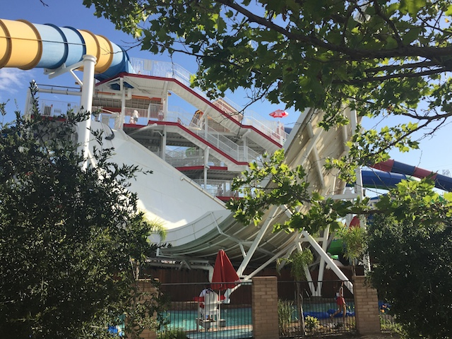

| |
Stealth Photos

We're here at SunSplash, where we'll be reveiwing their Half Pipe, Stealth. Now I had never ridden a Halfpipe prior to this, so they seemed pretty unique. But that's only in SoCal. Apparently, Half Pipes are extremely common up in NorCal. And I honestly really don't mind this. Because Halfpipes are freaking awesome. Get in the tube, and down we go. We just head down this really steep drop. And I really like it. We then head up the wall and fly on up. The more weight, the higher up you'll go. Obviously, but there are certain ways where you can get it to really spin as you're rocking up and down the half pipe walls. I'm not sure how, but it's possible to get a real good spinning ride. And once all that's done, you head down a small drop, hopefully backwards, and into the pool. And you just might flip when you hit the pool. A quick warning. You just might flip, and hit your head on the bottom of the pool. Yeah. That really hurts. But honestly, the rest of the ride was so good that I just really enjoyed it. Honestly, out of all the tube slides (Tornados, Tube Toilet Bowls (NO BAZOOKA BOWL CLONES!!!), Half Pipes, Wave Slides, and Tantrums), Half Pipes may just be my favorite. So yeah. Stealth is really good.
7/10
Location: Golfland Sunsplash (Roseville)
Opened: ???
Built by: ???
Last Ridden: July 27, 2024
Stealth Photos

Home
|